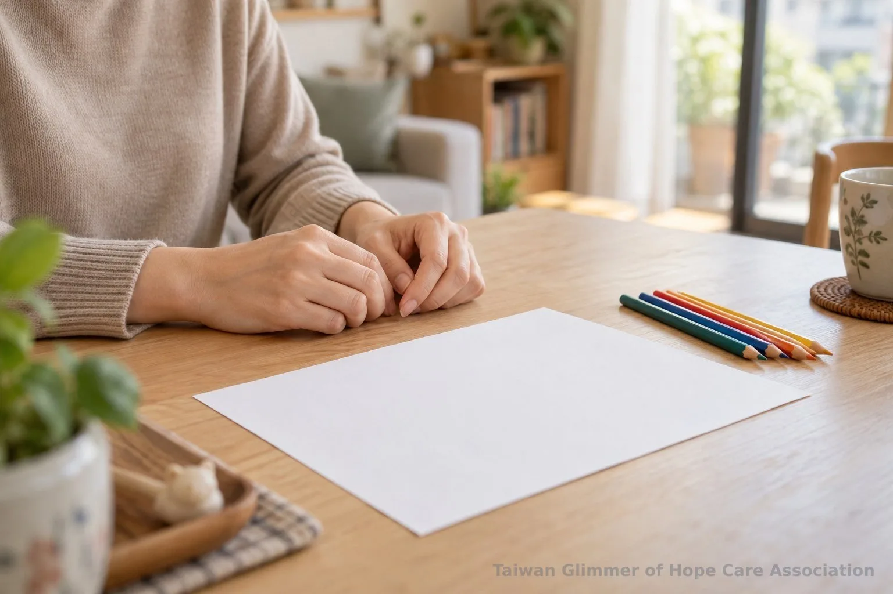
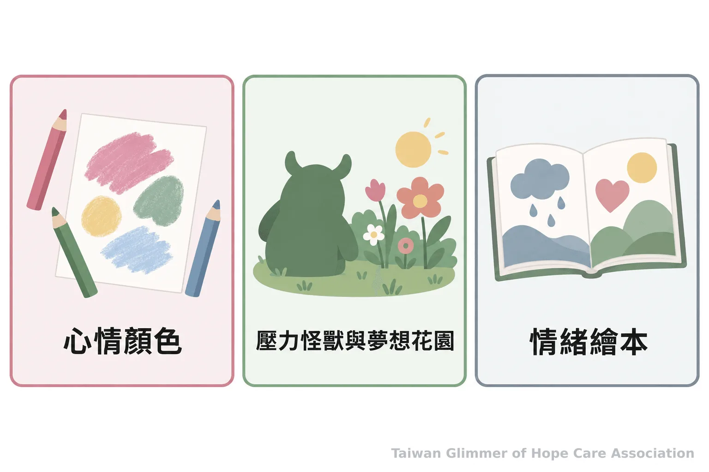
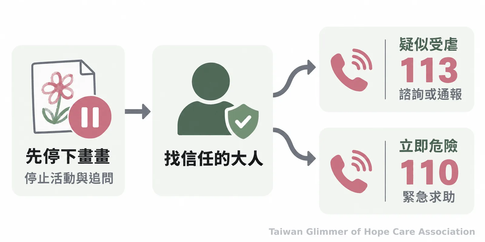

關於情緒繪畫，家長與老師需要知道的3件事
從協會據點的心情顏色、壓力怪獸與情緒繪本活動出發，整理大人如何陪孩子畫、聽與停下來；不解讀畫作，疑似受虐可撥113求助。
「如果今天的心情是一種顏色，你會選什麼？」這是協會據點帶活動時使用的提問。孩子可以畫，也可以不畫；一張畫能成為開口的起點，答案仍由孩子自己說。家長和老師陪伴時，先預備紙筆與一段不趕時間的空檔，讓孩子決定畫什麼、說多少，以及何時結束。
情緒繪畫是日常藝術陪伴，提供孩子表達與交流的機會。畫面不能單獨用來診斷心理狀態或判定受虐，也不取代心理、醫療或社政專業評估。

先把選擇權留給孩子
先邀請，不要求完成；孩子說出的感受比大人猜測畫面重要。沉默、拒絕或只想畫畫，都可以是完整的參與方式。
桌上放幾張紙、色筆或蠟筆即可，不必準備標準答案或範本。大人可以問：「你想試試看嗎？」孩子若點頭，再由他挑顏色與畫法；若不想，收起畫具，換個時間也可以。陪伴不是測驗，無須要求孩子分享作品或說明原因。
孩子願意介紹時，可回應「我看到你用了很多藍色」或「我喜歡你畫的這個細節」。這是在描述自己看見的事，不替顏色定義情緒。避免追問「為什麼畫成這樣」、評分好不好看，或從人物大小、顏色與筆觸推想家庭狀況。
研究提供的是有限背景。Drake與Winner研究兒童回想失望事件後，不同繪畫任務帶來的短期情緒變化；2020年回顧整理的則是由藝術治療師執行、形式多樣的專業介入。兩者都不能直接證明一次家庭或課堂畫畫具有治療效果。
三種活動，陪孩子多一種表達方式
用開放提問、安靜聆聽和孩子可跳過的步驟，陪他表達當下感受，不要求說出隱私或創傷經驗。
**心情的顏色：**中壢宣愛據點於9月5日進行這項活動。家長可問：「如果今天的心情是一種顏色，你會選什麼？」孩子完成後，若想分享，可邀請他說「我看到……」「我喜歡……」，也可問他今天有哪一件事讓自己覺得很棒。這些句子都是選項，不是作業；不必追問顏色代表什麼。
**壓力怪獸與夢想花園：**瑞芳據點於9月19日以壓力怪獸為創作題目，並延伸到夏卡爾與夢想花園。準備兩張紙，讓孩子選擇把壓力想像成烏雲、怪獸、旋風或其他形狀。可以問：「想替它取個名字嗎？」孩子若願意，再邀請他替怪獸說一句話；不想說就跳過。接著可畫一個讓自己感到安全、平靜的地方。不要要求孩子畫出受傷或可怕經驗，也不把創作當成調查。
**共讀《情緒大飯店》：**協會曾在輔大附設醫院親子日以繪本帶領活動。讀到角色遇上不同情境時，可問：「你覺得他現在可能有什麼感受？」孩子可以談角色、談自己，或只聽故事。情緒沒有好壞，大人可以理解並接納感受，同時為行為設下安全界線。

「孩子是需要被鼓勵、被肯定的。」
台灣微光希望關懷協會理事長林秀霞
孩子想停下時，先停；安全疑慮交給專業資源
停止活動與追問，讓孩子選擇休息或找信任的大人；疑似受虐可撥113諮詢或通報，立即人身危險請撥110。
孩子推開畫具、沉默或表示不想繼續，就收起問題，不勸他完成。可問：「你想休息，還是找一位信任的大人陪你？」若孩子情緒明顯升高，先照顧現場安全。孩子若透露疑似受虐，聽他說到哪裡即可，不自行查問、調查或承諾保密。依衛生福利部資訊，113提供保護諮詢、通報與轉介；有立即危險時先撥110。一般民眾、教師與志工提供支持並聯繫資源，不負責調查或作保護決策。
《兒童及少年福利與權益保障法》第69條規定，對特定兒少不得報導或以公示方式揭露姓名及其他足以識別身分的資訊。也請保護作品與談話隱私，不在社群或活動宣傳中公開孩子姓名、學校、家庭處境、畫作或可辨識細節。今天可以從一張紙開始，問孩子要不要畫；他不想，就讓陪伴停在他願意的位置。

- 先邀請再聆聽，孩子可以拒絕畫畫或分享。
- 不解讀畫作、不追問創傷，也不以畫作診斷或判定受虐。
- 疑似受虐撥113諮詢或通報；立即危險撥110。
常見問題
Q1：孩子不願意分享畫作，怎麼辦？
尊重他的選擇，不要求解釋，也不要把沉默當成問題。可以陪在旁邊，或讓孩子收起作品。
Q2：孩子只用深色畫畫，代表心情不好嗎？
不能只憑顏色判斷情緒或心理狀態。若有持續擔心，可在平靜時關心近況，必要時尋求專業協助。
Q3：孩子畫到一半不想畫，需要鼓勵他完成嗎？
不需要。停下、休息或改做其他事都可以，完成作品不是目的。
Q4：情緒繪畫等於藝術治療嗎？
不等同。日常陪畫提供表達與交流機會；專業藝術治療由受訓人員依介入目標帶領，兩者情境不同。
Q5：懷疑孩子遭受不當對待，該怎麼做？
不要用繪畫追問或自行調查。疑似受虐可撥113諮詢或通報；立即人身危險時撥110。
參考資料
研究與求助資訊來自同儕審查期刊、衛生福利部及全國法規資料庫。
- Drake JE, Winner E. (2013). How children use drawing to regulate their emotions. Cognition and Emotion, 27(3), 512–520. https://pubmed.ncbi.nlm.nih.gov/22963448/
- Bosgraaf L, et al. (2020). Art Therapy for Psychosocial Problems in Children and Adolescents: A Systematic Narrative Review on Art Therapeutic Means and Forms of Expression, Therapist Behavior, and Supposed Mechanisms of Change. Frontiers in Psychology, 11, 584685. https://www.frontiersin.org/journals/psychology/articles/10.3389/fpsyg.2020.584685/full
- 衛生福利部保護服務司（2024）。113保護專線介紹。https://dep.mohw.gov.tw/DOPs/cp-1183-6499-105.html
- 衛生福利部（2026）。兒少保護。https://www.mohw.gov.tw/cp-190-233-1.html
- 全國法規資料庫（2021修正）。兒童及少年福利與權益保障法，第69條。https://law.moj.gov.tw/LawClass/LawAll.aspx?pcode=D0050001
本文同步刊於 appi.news。